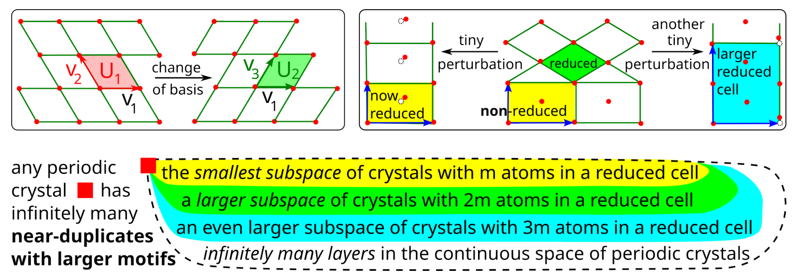
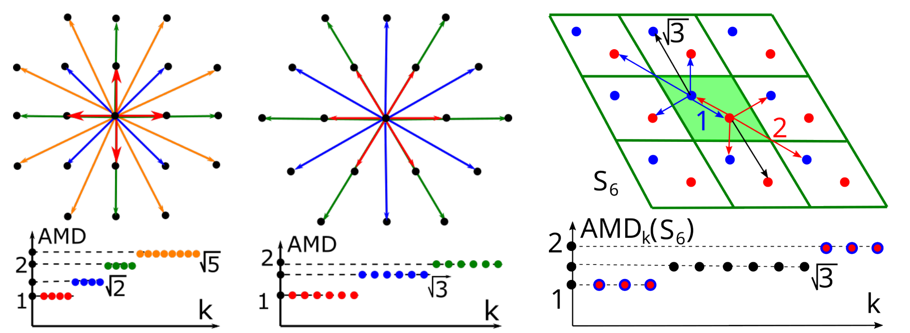
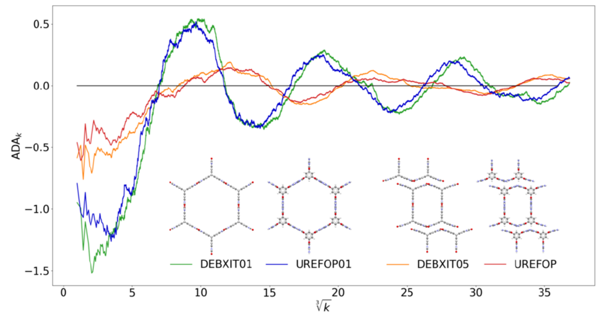
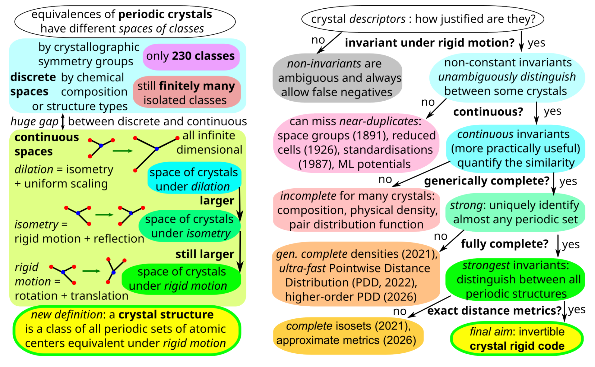
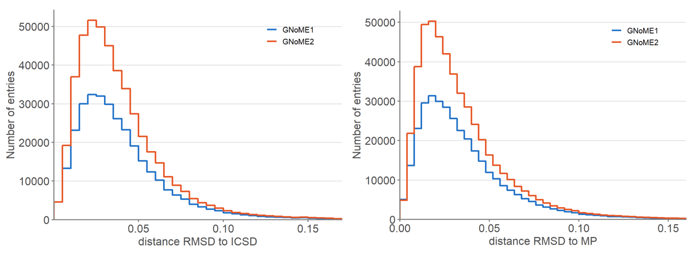
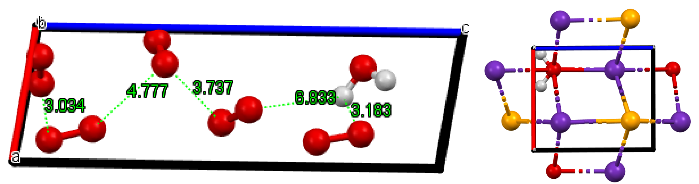
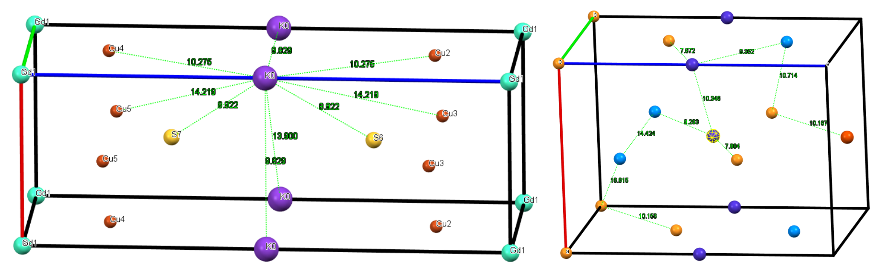
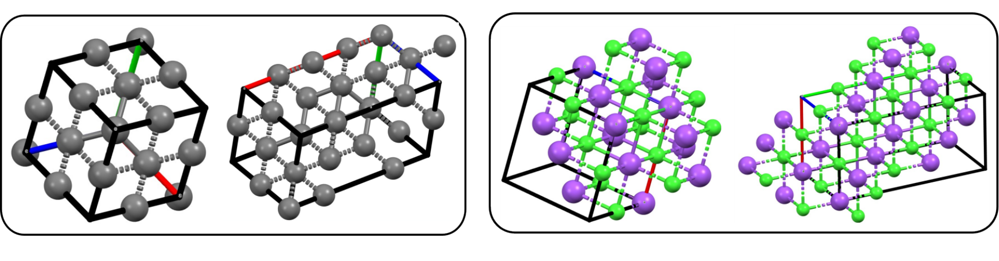

用连续不变量量化晶体新颖性：从结构指纹到材料发现基准
论文原文 ↗Daniel E Widdowson、Tatiana V Kurlina、Olga D Anosova、Vitaliy A Kurlin，Necessary conditions for benchmarking next-generation AI in materials discovery，arXiv，2026。官方页面｜原始 PDF
人工智能可以快速生成大量候选晶体，逐个交给专家判断新颖性却很困难。同一结构换原点、换晶胞基矢或重排原子，就能形成不同 CIF；对坐标施加很小扰动，还会产生几何接近的新文件。仅按化学式、文件或二值匹配统计，难以持续追踪候选与已有结构的关系。
本文用一套连续晶体不变量，把“结构是否不同”推进为“结构相差多少”。作者将计算从快速指纹逐级升级到更强的几何比较，分析两个 GNoME 数据集，并据此提出材料发现应满足的输入可信性、化学实用性、连续新颖性和合理原子几何条件。
方法怎样做：让结构指纹消除表示自由度，并随原子移动连续变化
CIF 给出晶胞和胞内原子，将其沿晶格无限重复，才得到完整周期结构。晶体可以有许多等价晶胞写法，约化晶胞又可能因微小扰动突然变化。作者因此直接围绕周期原子中心构造不变量：整体平移、旋转或改变晶胞写法时，指纹保持相同。

原图 1｜左上展示换基，右上展示微扰引起的约化晶胞变化，下方展示具有更大原胞的近邻结构。
比较首先要选定等价关系：平移和旋转构成刚体运动，加入镜像得到等距关系，再加入整体缩放得到更粗的关系。连续性则规定，原子只移动一点，指纹距离也应只变一点；完备性要求指纹能够唯一识别相应等价关系下的结构。不同层级的指纹在计算速度与几何分辨能力间分工。
从一个候选 CIF 开始，对胞内每个原子，在完整周期结构中找前 k 个最近邻，将距离由小到大列出。把所有原子的第一个邻居距离平均，再平均第二个，依次得到 AMD，平均最小距离向量。它把配位壳层转成一条可比较的距离曲线。

原图 2｜方格、六角晶格和蜂窝结构具有不同的距离壳层；颜色连接相应邻居与距离序列。
若保留每个原子的完整距离行，而不直接平均，就得到 PDD，逐点距离分布。相同环境行合并并记录权重，行的排列顺序不影响结果。两个 PDD 用推土机距离 EMD 比较：将一组环境的权重匹配到另一组，寻找最小总搬运代价，行间代价来自距离列表的均方根差。即使胞内原子数不同，也能通过归一化权重比较。
其连续性有直观几何依据：每个原子移动最多 ε，两原子距离最多改变 2ε，AMD 和 PDD 的相应距离也有这样的变化上界。进一步，远邻距离随邻居序号增加，逐渐被平均密度支配。作者减去由每原子体积决定的渐近增长项，得到 ADA 和 PDA，平均及逐点的渐近偏离量，让局部结构起伏更清晰。

原图 3｜横轴为邻居序号的立方根，纵轴为 ADA。相近曲线揭示不同晶体之间的几何关系。
检索按层级展开：先用 100 邻居 ADA 向量快速找候选，再比较 PDA 的 EMD；对更接近的结构增加二阶分布，保留三原子关系；最后用局部向量簇构成的 isoset 做更强几何比较。当前数据库实验采用 100 邻居与 5 Å 局部簇。每层都优先排除已经相差较大的候选，将更多计算留给近邻。

原图 4｜左侧组织允许的几何变换，右侧组织指纹的不变性、连续性和区分能力，展示从快速表示到更强识别的路线。
查询结构到数据库最近邻的指纹距离，定义为局部新颖性距离 LND。它将新颖性表示为相对指定参考库、距离和指纹的连续量。计算还可加入元素约束，让匹配只在相同元素之间进行，从几何比较进一步得到化学与几何共同匹配。
主要结果：大规模比较揭示结构重用，连续距离接入可信性评价
级联计算区分几何重合与保留元素的匹配
作者比较包含 384,938 条结构的 GNoME1 和 554,054 条结构的 GNoME2。最大阈值 0.01 Å 下，快速指纹筛选留下约 1.347 亿对候选，逐层比较后约 24.35 万对通过全部距离条件。Ryzen 5 5600X、32 GB 内存和八进程的筛选后比较耗时约 16 小时 12 分钟，展示了连续不变量处理大数据库的可行性。
将通过阈值的结构对连接并分组，每组保留一条，其余条目所占比例定义为冗余率：
| 0.01 Å 阈值下的冗余率 | GNoME1 | GNoME2 |
|---|---|---|
| 仅比较原子中心几何 | 12.438% | 15.178% |
| 同时保留元素匹配 | 1.156% | 0 |
两行分别回答几何结构重用和同化学近邻问题。几何比较把不同元素组合的相似排布联系起来，元素约束则进一步识别相同化学组成的匹配。在接近数值精度的阈值下，GNoME1 的同化学重复组包含 2311 条，额外冗余率为 0.306%；GNoME2 已消除了这里识别的内部同化学匹配。
到旧数据库的连续近邻距离展示生成结构的位置
与 2021 年 3 月前的 ICSD 和 Materials Project 比较，GNoME2 中分别有 73.1% 和 78.4% 的条目，PDA 几何近邻距离低于 0.05 Å。加入化学匹配后，作者报告与旧库同时匹配的比例约 0.15%。这将“熟悉的结构原型”与“相同化学材料”分别呈现，显示许多候选围绕已知几何探索组成。

原图 5｜以 StructureMatcher 的 RMSD 展示两个 GNoME 集合到 ICSD、MP 的几何近邻分布，横轴为距离，纵轴为条目数。
作者同时展示新化学式与实际结构之间的关系。H₂O₁₁ 条目含分散的水和氧分子，H₂ORb₂Se 中含一个水分子；这些例子使新颖性评价从组成字符串进一步落到实际原子排布。

原图 6｜左侧为 H₂O₁₁，右侧为 H₂ORb₂Se，展示不同组成条目的具体结构内容。
几何新颖性与合理接触距离共同筛选候选
某些 GNoME1 条目在几何空间中很特殊，同时表现出异常接触：一条结构中的 K 距最近邻约 8.92 Å，另一条的所有最近接触均不短于约 7.87 Å。作者用最近邻距离和点密度识别这些极端结构，说明连续新颖性应与元素相关的合理成键条件共同使用。

原图 7｜左侧显示与其他原子相距较远的 K，右侧显示整体稀疏的原子排布，距离标签直观呈现筛选依据。
“晶体伪装”程序则从金刚石、NaCl 等已知结构出发，通过扩胞、换基和原子重排生成不同文件，再加入小幅坐标扰动。无扰动时 PDD 距离接近零；每个原子最多移动 0.01 Å 时，EMD 上界为 0.02 Å。这个例子展示，连续指纹能够把显著改变的文件接回原来的几何邻域。

原图 8｜每组对照原结构与改写后的近邻结构，晶胞大小和方向改变，而原子几何保持相同或接近。
对材料发现基准的贡献
本文把晶体结构的数学等价关系、对噪声稳定的指纹和数据库级检索接在一起，使候选的新颖性能够连续追踪和量化。级联计算控制成本，几何与化学匹配提供不同维度的比较，实际原子接触又将结构距离接回物理可信性。
作者据此提出材料发现的四类必要条件：以稳定表示保证输入可信性，由领域知识评价化学实用性，用连续最近邻距离报告结构新颖性，并检验原子几何是否符合合理成键约束。这为大规模生成从“输出新文件”走向可评价的材料候选提供了清楚的基准框架。
原始摘要完整译文
当前的人工智能通过加速能量最小化并在大型数据库上训练来预测材料。然而，数据生成规模的扩大使领域专家无法逐一人工分析。如果仅通过化学组成、晶体学信息文件中的传统表示，或基于人工选择阈值的标准结构匹配器来评价新颖性，就很容易生成数百万种“新”组成或文件，却没有发现真正新颖的材料。本文基于晶体结构的新数学定义及不变量描述符的渐近保证，使用一套晶体不变量层级，连续地追踪和量化结构新颖性。通过在普通计算机上开展级联计算，这种基于不变量的分析揭示了世界上最大的一些材料数据库中出乎意料的重复规模，本文以备受关注的 GNoME 数据集为例进行展示。为避免当前这种“过度预测的尴尬”，我们提出下一代人工智能必须满足的必要条件，主张在宣称任何新材料之前自动落实这些条件。